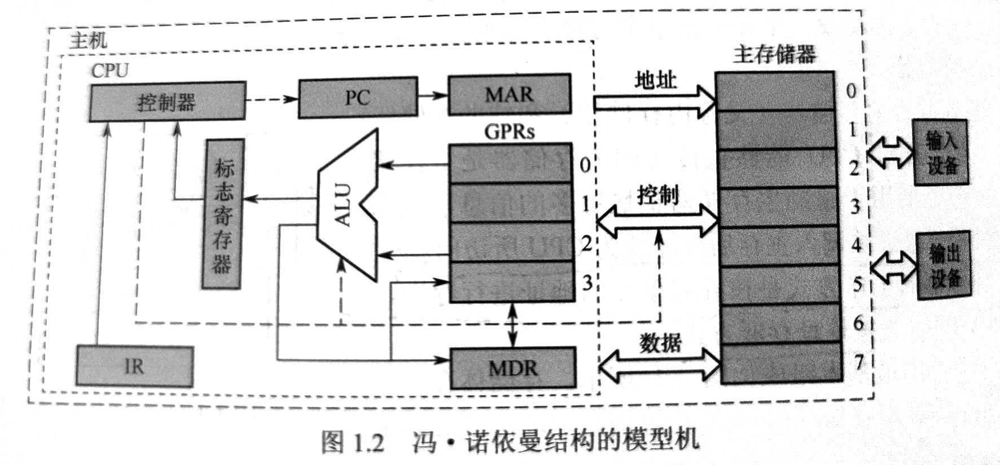

计算机系统概述¶
Q&A¶
- 计算机由哪几部分组成？以哪部分为中心？
1). 由`中央处理器(CPU)`，`存储器`，`运算器`，`输入设备`，`输出设备`五大部分年组成。 2). 以中央处理器为中心。 - 主频高的 CPU 一定比主频低的 CPU 快吗？为什么？
- 翻译程序，汇编程序，编译程序，解释程序有什么差别？各自的特性是什么？
- 不同级别的语言编写的程序有什么区别？哪种语言编写的程序能被硬件直接执行？
计算机的发展历程¶
硬件¶
- 电子管时代
- 晶体管时代
- 中小规模集成电路时代
- 大规模集成电路时代
计算机系统层次结构¶
计算机系统组成¶
- 硬件
- 软件
软件是指运行在硬件上的**程序和相关的数据和文档**
计算机硬件¶
冯诺伊曼体系¶
程序存储：将事先编制好的程序和原始数据送入主存后才能执行。程序一旦执行开始，就无需人工干预。计算机会自动逐条执行指令，直至程序结束。

输入、输出设备¶
- 输入设备：用于将程序和数据以机器所能接受和识别的方式输入给计算机。
- 输出设备：将计算机的处理结果以人们所能理解的形式输出。
存储器¶
- 主存、辅存
- 辅存中的信息须调入主存后，才能被 CPU 访问
- 主存工作方式：按地址存取方式
- 组成部分：存储体，MAR（地址寄存器），MDR（数据寄存器）
MAR，MDR，Cache 存在于 CPU 中
MDR 的位数与存储字长相等
运算器¶
- 功能：算术运算和逻辑运算。
- 组成：
- 核心：ALU
- 若干通用寄存器：累加器（ACC），乘商寄存器（MQ），操作数寄存器（X），和基址寄存器（BR），变址寄存器（IX）
- 程序状态寄存器，PSW
控制器¶
- 组成：
- 程序计数器（PC），与主存的 MAR 之间有直接通路
- 指令存储器（IR），指令中的操作码（OP）送至 CU 用于分析指令，地址码（Ad）送至 MAR 用于取操作数
- 控制单元（CU），分析指令并发出各种微指令序列
- 功能：
- 控制如何修改 PC
- 控制 ALU 执行什么运算
- 控制内存读写
计算机软件¶
三个级别的语言¶
- 翻译程序：将高级语言程序转换为**低级语言**程序的程序
- 汇编程序：将汇编语言程序转换为机器语言程序
- 解释程序：将源程序中的语句按执行顺序逐条翻译成机器指令并立即执行
- 编译程序：将高级语言程序翻译成汇编语言程序或机器语言程序
软、硬件的逻辑功能等价性¶
略
计算机系统层次结构¶
- 微程序机器M0（微指令系统）
由硬件直接执行微指令
- 传统机器M1（用机器语言的机器）
用微程序解释机器指令
计算机的性能指标¶
字长¶
- 字：人为规定的长度
- 机器字长
- 指令字长
- 存储字长
- 数据字长：等于数据通路带宽
数据通路带宽¶
- 数据通路：各个子系统通过总线连接形成的数据传输路径称为数据通路
- 数据通路带宽：数据总线一次所能并行传输的数据的位数
主存容量¶
表示方法：字数 x 字长（/ byte）
MAR反映存储单元个数，MDR反映存储单元字长
运算速度¶
吞吐量和响应时间¶
- 吞吐量：指系统在单位时间内处理请求的数量
主要取决于主存的存取周期
- 响应时间：指从用户发出请求到系统作出响应并获得结果的等待时间。
包括 CPU 时间**和**等待时间
主频和时钟周期¶
- 时钟周期：CPU 中最小的时间单位。执行指令的每个动作至少需要一个时钟周期
- 主频：1秒执行的时钟周期的个数，单位Hz（每秒1次）、MHz、GHz
CPI (clock cycle per instruction)¶
- 执行一条指令所需的时钟周期数
- 程序或机器的 CPI 通常是指一个平均值
CPU 执行时间¶
- 运行一个程序所需要花费的时间
- CPU 执行时间 = （指令条数 x CPI）/ 主频
- 指令条数、CPI、主频相互制约
MIPS(million instructions per second)¶
- 每秒百万条指令
- MIPS = 主频 / (CPI x 10^6)
MFLOPS¶
MFLOPS, GFLOPS, TFLOPS, PFLOPS ...